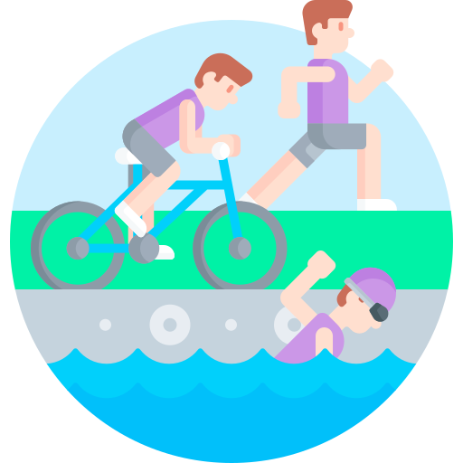
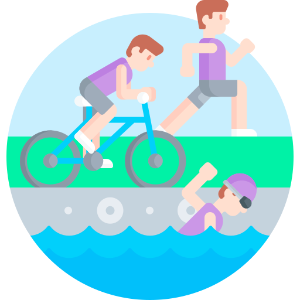

Équipements sportifs
 Autres équipements
Autres équipements
Bassins aquatiques
 Courts de tennis
Courts de tennis
 Équipements extérieurs
 Nature
Nature
Salles collectives
Terrains grands jeux
À propos de cette carte :
Cette carte interactive présente différentes informations sur la métropole de Lyon, notamment la densité de population, les équipements sportifs et les pistes cyclables. Elle a été réalisée dans le cadre d’un projet universitaire, dont l’objectif est de croiser plusieurs données géographiques pour offrir une vision complète des dynamiques urbaines du territoire.
Les symboles utilisés pour représenter les équipements proviennent du site Flaticon, et ont été créés par Freepik. Les données relatives aux équipements sportifs et aux pistes cyclables ont été chargées depuis Data Grand Lyon, tandis que les communes proviennent de la base Admin Express de l’IGN.
En ce qui concerne la typographie, la police d’écriture utilisée est soumise au copyright © 2009 ParaType Ltd.
N’hésitez pas à cliquer sur les différentes couches pour explorer plus en détail la carte. Pour toute question ou retour, vous pouvez me contacter via mon adresse e-mail (emilie082000@live.fr).
 Autres équipements
Autres équipements
Bassins aquatiques
 Courts de tennis
Courts de tennis
 Équipements extérieurs
 Nature
Nature
Salles collectives
Terrains grands jeux
Sur trottoir
Sur chaussée
Sans objet